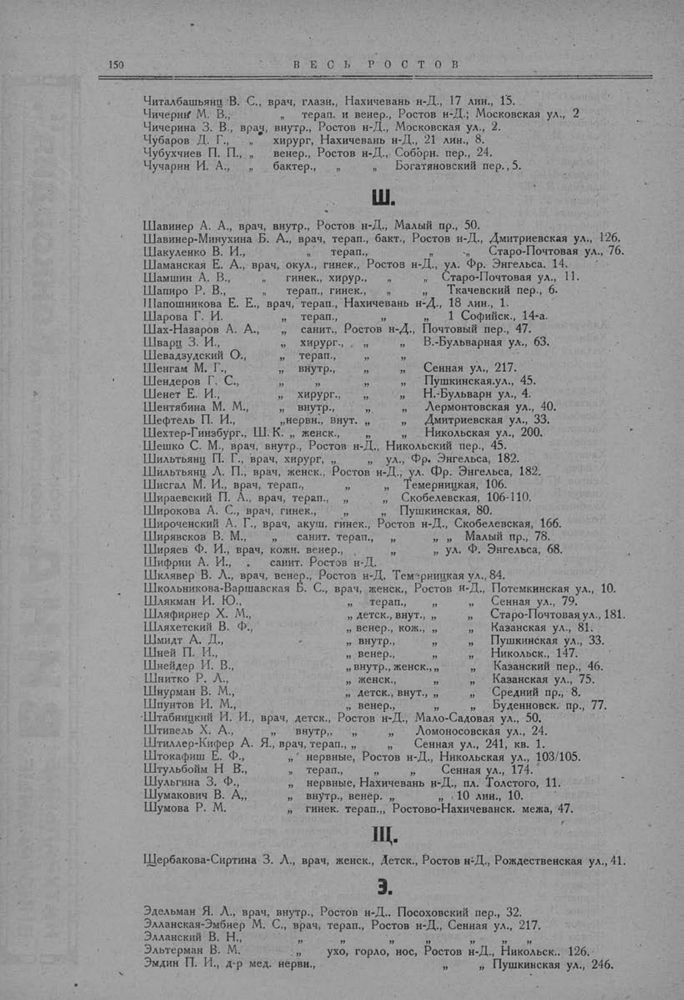

Лист источника 200
Скан

Распознанный текст
150
В Е С Ь Р О С Т О В
Читалбашьянц В. С., врач, глазн., Нахичевань н-Д., 17 лин., 15.
Чичерин М. В., „ терап. и венер., Ростов н-Д.; Московская ул., 2
Чичерина З. В., врач, внутр., Ростов н-Д., Московская ул., 2.
Чубаров Д. Г., „ хирург, Нахичевань н-Д., 21 лин., 8.
Чубухчиев П. П., „ венер., Ростов н-Д., Соборн. пер., 24.
Чучарин И. А., „ „ бактер., „ Богатяновский пер., 5.
Ш.
Шавинер А. А., врач, внутр., Ростов н-Д., Малый пр., 50.
Шавинер-Минухина Б. А., врач, терап., бакт., Ростов н-Д., Дмитриевская ул., 126.
Шакуленко В. И., „ терап., „ „ Старо-Почтовая ул., 76.
Шаманская Е. А., врач, окул., гинек., Ростов н-Д., ул. Фр. Энгельса, 14.
Шамшин А. В., „ гинек., хирург., „ „ Старо-Почтовая ул., 11.
Шапиро Р. В., „ терап., гинек., „ „ Ткачевский пер., 6.
Шапошникова Е. Е., врач, терап., Нахичевань н-Д., 18 лин., 1.
Шарова Г. И. „ терап., „ „ 1 Софийск., 14-а.
Шах-Назаров А. А., „ санит., Ростов н-Д., Почтовый пер., 47.
Шварц З. И., „ хирург., „ „ В.-Бульварная ул., 63.
Шевадзудский О., „ терап., „ „
Шенгам М. Г., „ внутр., „ „ Сенная ул., 217.
Шендеров Г. С., „ „ „ „ Пушкинская ул., 45.
Шенет Е. И., „ хирург., „ „ Н.-Бульварн ул., 4.
Шентябина М. М., „ внутр., „ „ Лермонтовская ул., 40.
Шефтель П. И., „нервн., внут. „ „ Дмитриевская ул., 33.
Шехтер-Гинзбург., Ш. К. „ женск., „ „ Никольская ул., 200.
Шешко С. М., врач, внутр., Ростов н-Д., Никольский пер., 45.
Шильтьянц П. Г., врач, хирург, „ „ ул., Фр. Энгельса, 182.
Шильтьянц Л. П., врач, женск., Ростов н-Д., ул. Фр. Энгельса, 182.
Шисгал М. И., врач, терап., „ „ Темерницкая, 106.
Шираевский П. А., врач, терап., „ „ Скобелевская, 106-110.
Широкова А. С., врач, гинек., „ „ Пушкинская, 80.
Широченский А. Г., врач, акуш. гинек., Ростов н-Д., Скобелевская, 166.
Ширявсков В. М., „ санит. терап., „ „ Малый пр., 78.
Ширяев Ф. И., врач, кожн. венер., „ „ ул. Ф. Энгельса, 68.
Шифрин А. И., . санит. Ростов н-Д.
Шклявер В. Л., врач, венер., Ростов н-Д. Темерницкая ул., 84.
Школьникова-Варшавская Б. С., врач, женск., Ростов н-Д., Потемкинская ул., 10.
Шлякман И. Ю., „ терап., „ „ Сенная ул., 79.
Шляфирнер Х. М., „ детск., внут., „ Старо-Почтовая ул., 181.
Шляхетский В. Ф., „ венер., кож., „ „ Казанская ул., 81.
Шмидт А. Д., „ внутр., „ „ Пушкинская ул., 33.
Шней П. И., „ венер., „ „ Никольск., 147.
Шнейдер И. В., „ внутр., женск., „ Казанский пер., 46.
Шнитко Р. Л., „ женск., „ „ Казанская ул., 75.
Шнурман В. М., „ детск., внут., „ Средний пр., 8.
Шпунтов И. М., „ венер., „ „ Буденновск. пр., 77.
Штабницкий И. И., врач, детск., Ростов н-Д., Мало-Садовая ул., 50.
Штивель Х. А., внутр., „ „ Ломоносовская ул., 24.
Штиллер-Кифер А. Я., врач, терап., „ „ „ Сенная ул., 241, кв. 1.
Штокафиш Е. Ф., „ нервные, Ростов н-Д., Никольская ул., 103/105.
Штульбойм Н. В., „ терап., „ „ Сенная ул., 174.
Шульгина З. Ф., „ нервные, Нахичевань н-Д., пл. Толстого, 11.
Шумакович В. А., „ внутр., венер. „ „ 10 лин., 10.
Шумова Р. М. „ гинек. терап.,, Ростово-Нахичеванск. межа, 47.
Щ.
Щербакова-Сиртина З. Л., врач, женск., детск., Ростов н-Д., Рождественская ул., 41.
Э.
Эдельман Я. Л., врач, внутр., Ростов н-Д., Посоховский пер., 32.
Элланская-Эмбнер М. С., врач, терап., Ростов н-Д., Сенная ул., 217.
Элланский В. Н., „ „ „ „ „ „
Эльтерман В. М. „ ухо, горло, нос, Ростов н-Д., Никольск., 126.
Эмдин П. И., д-р мед. нервн., „ „ Пушкинская ул., 246.